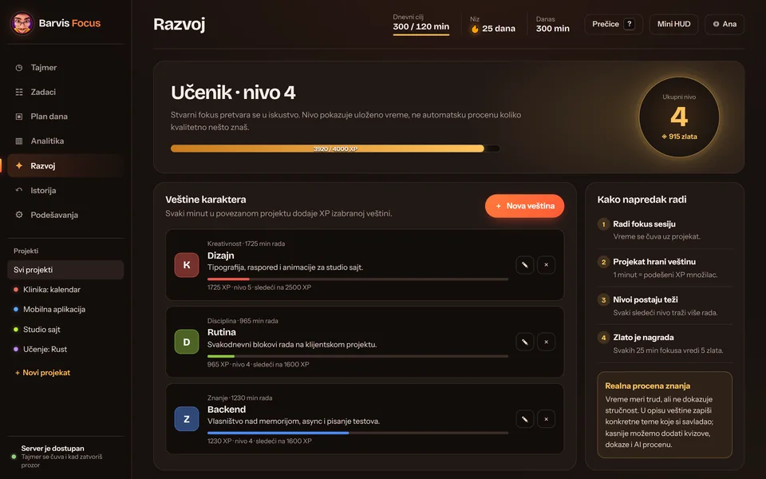

사례 연구 · 자체 제품
BARVIS Focus 목표에서 벗어나지 않는 집중.
- 문제
- 타이머는 한 앱에, 할 일은 다른 앱에, 메모는 또 다른 앱에. 시간이 어디로 가는지 보이지 않았습니다.
- 해결
- 프로젝트와 할 일에 연결된 타이머, 하루 계획, 일·주·월별 통계, 투자한 시간에 따라 오르는 기술 레벨.
- 기술
- Django, PostgreSQL, Docker; 전용 서버.
BARVIS Focus는 고객 프로젝트가 아닌 제 자체 제품입니다. 기기 간 동기화, 키보드만으로의 사용, 분석까지, 복잡한 시스템을 처음부터 끝까지 만드는 방식을 보여 줍니다.

41초 둘러보기: 타이머, 할 일, 하루 계획, 통계, 성장, 휴대폰. 가상 데이터.
목표에서 벗어나지 않는 집중.
휴대폰에서.
데스크톱에서 멈춘 곳에서 같은 타이머가 이어집니다.

통계.
일별·프로젝트별 시간을 이전 기간과 비교합니다.

진행률이 보이는 할 일.
완료한 뽀모도로가 할 일에 기록됩니다.

성장.
투자한 시간이 기술 레벨이 됩니다.

기술적 특징: 데스크톱과 휴대폰에서 같은 타이머, 다른 앱 위에 뜨는 작은 창, 명령 팔레트와 완전한 키보드 조작.
- 모든 기기의 타이머
- 키보드 단축키
- 통계와 CSV 내보내기
- 접근성
- 전용 서버